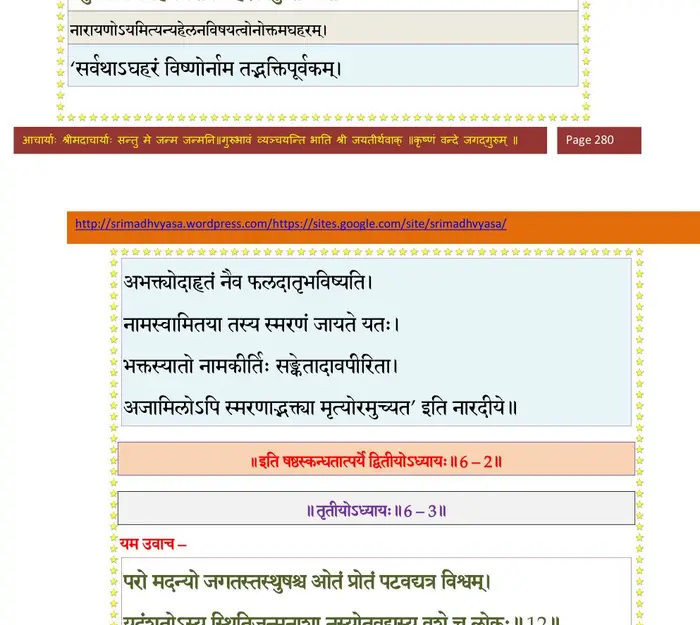

स्कन्ध 6 · अध्याय 2
श्लोक १
बादरायणिरुवाच–
एतत्ते भगवद्दूता यमदूताभिभाषितम् ।
उपधार्याथ तान्राजन् प्रत्याहुर्नयकोविदाः।। १ ।।
एतत्ते भगवद्दूता यमदूताभिभाषितम् ।
उपधार्याथ तान्राजन् प्रत्याहुर्नयकोविदाः।। १ ।।
श्लोक २
विष्णुदूता ऊचुः–
अहो कष्टं धर्मदृशामधर्मः स्पृशते सताम् (सभाम्) ।
यत्रादण्ड्येष्वपापेषु दण्डो यैर्ध्रियते वृथा।। २ ।।
अहो कष्टं धर्मदृशामधर्मः स्पृशते सताम् (सभाम्) ।
यत्रादण्ड्येष्वपापेषु दण्डो यैर्ध्रियते वृथा।। २ ।।
श्लोक ३
प्रजानां पितरो ये च शास्तारः साधवः समाः ।
यदि स्यात्तेषु वैषम्यं कं यान्ति शरणं प्रजाः।। ३ ।।
यदि स्यात्तेषु वैषम्यं कं यान्ति शरणं प्रजाः।। ३ ।।
श्लोक ४
यद्यदाचरति श्रेयानितरस्तत्तदीहते ।
स यत्प्रमाणं कुरुते लोकस्तदनुवर्तते।। ४ ।।
स यत्प्रमाणं कुरुते लोकस्तदनुवर्तते।। ४ ।।
श्लोक ५
यस्याङ्के शिर आधाय लोकः स्वपिति निर्वृतः ।
स्वयं धर्ममधर्मं वा न हि वेद यथा पशुः।। ५ ।।
स्वयं धर्ममधर्मं वा न हि वेद यथा पशुः।। ५ ।।
श्लोक ६
स कथं ह्यर्पितात्मानं कृतमैत्रमचेतनम् ।
विस्रम्भणीयो भूतानां सघृणो द्रोग्धुमर्हति।। ६ ।।
विस्रम्भणीयो भूतानां सघृणो द्रोग्धुमर्हति।। ६ ।।
श्लोक ७
अयं हि कृतनिर्वेशो जन्मकोट्यहंसामपि ।
यद्व्याजहार विवशो नाम स्वस्त्ययनं हरेः।। ७ ।।
यद्व्याजहार विवशो नाम स्वस्त्ययनं हरेः।। ७ ।।
श्लोक ८
एतेनैव ह्यघो नोऽस्य कृतं स्यादघनिष्कृतम् ।
यदा नारायण इति जगाद चतुरक्षरम्।। ८ ।।
यदा नारायण इति जगाद चतुरक्षरम्।। ८ ।।
श्लोक ९
स्तेनः सुरापो मित्रध्रुग्ब्रह्महा गुरुतल्पगः ।
स्त्रीराजपितृगोहन्ता ये च पातकिनोऽपरे।। ९ ।।
स्त्रीराजपितृगोहन्ता ये च पातकिनोऽपरे।। ९ ।।
श्लोक १०
सर्वेषामप्यघवतामिदमेव सुनिष्कृतम् ।
नामव्याहरणं विष्णोर्यतस्तद्विषया मतिः।। १० ।।
नामव्याहरणं विष्णोर्यतस्तद्विषया मतिः।। १० ।।
श्लोक ११
न निष्कृतैरुदितैर्ब्रह्मवादिभिस्तथा विशुद्ध्यत्यघवान् व्रतादिभिः ।
यथा हरेर्नामपदैरुदाहृतैस्तदुत्तमश्लोकगुणोपलम्भकम्।। ११ ।।
यथा हरेर्नामपदैरुदाहृतैस्तदुत्तमश्लोकगुणोपलम्भकम्।। ११ ।।
श्लोक १२
नैकान्तिकं तद्धि कृतेऽपि निष्कृते मनः पुनर्धावति चेदसत्पथे ।
तत्कर्मनिर्हारमभीप्सतां हरेर्गुणानुवादः खलु सत्वभावनः।। १२ ।।
तत्कर्मनिर्हारमभीप्सतां हरेर्गुणानुवादः खलु सत्वभावनः।। १२ ।।
श्लोक १३
अथैनं माऽपनयत कृताशेषाघनिष्कृतम् ।
यदसौ भगवन्नाम म्रियमाणः समग्रहीत्।। १३ ।।
यदसौ भगवन्नाम म्रियमाणः समग्रहीत्।। १३ ।।
श्लोक १४
साङ्केत्यं पारिहास्यं वा स्तोभं हेलनमेव वा ।
वैकुण्ठनामग्रहणमशेषाघहरं विदुः।। १४ ।।
वैकुण्ठनामग्रहणमशेषाघहरं विदुः।। १४ ।।
भागवततात्पर्यनिर्णय

श्लोक १५
पतितस्खलितो भग्नः सन्दष्टस्तप्त आहतः ।
हरिरित्यवशेनाह पुमान्नार्हति यातनाम्।। १५ ।।
हरिरित्यवशेनाह पुमान्नार्हति यातनाम्।। १५ ।।
श्लोक १६
गुरूणां च लघूनां च गुरूणि च लघूनि च ।
प्रायश्चित्तानि पापानां ज्ञात्वोक्तानि महर्षिभिः।। १६ ।।
प्रायश्चित्तानि पापानां ज्ञात्वोक्तानि महर्षिभिः।। १६ ।।
श्लोक १७
तैस्तान्यघानि पूयन्ते तपोदानव्रतादिभिः ।
नाधर्मबीजं हृदयं तदपीशाङ्घ्रिसेवया।। १७ ।।
नाधर्मबीजं हृदयं तदपीशाङ्घ्रिसेवया।। १७ ।।
श्लोक १८
धर्मो योऽयमुपन्यस्तः परमस्तु सनातनः ।
क्रियतेऽहरहः शुद्धिरात्मनो वाससो यथा।। १८ ।।
क्रियतेऽहरहः शुद्धिरात्मनो वाससो यथा।। १८ ।।
श्लोक १९
नैकान्तशुद्धिः स्यात् कर्तुः क्रियया कर्तृता यतः ।
अकर्तुरात्मनस्तस्माद्भजेतानीहया हरिम्।। १९ ।।
अकर्तुरात्मनस्तस्माद्भजेतानीहया हरिम्।। १९ ।।
श्लोक २०
अज्ञानादथवा ज्ञानादुत्तमश्लोकनाम यत् ।
सङ्कीर्तितमघं पुंसो दहत्येधो यथाऽनलः।। २० ।।
सङ्कीर्तितमघं पुंसो दहत्येधो यथाऽनलः।। २० ।।
श्लोक २१
यथाऽगदं वीर्ययुतं सूपयुक्तं यदृच्छया ।
अजानतोऽप्यात्मगुणं कुर्यान्मन्त्रोऽप्युदाहृतः ।। २१ ।।
अजानतोऽप्यात्मगुणं कुर्यान्मन्त्रोऽप्युदाहृतः ।। २१ ।।
श्लोक २२
पतिं वः पृच्छत भटा धर्मेऽस्मिन् यदि संशयः ।
स वेद परमं गुह्यं धर्मस्य भगवान् यमः।। २२ ।।
स वेद परमं गुह्यं धर्मस्य भगवान् यमः।। २२ ।।
श्लोक २३
श्रीशुक उवाच–
एवं ते सुविनिर्णीय धर्मं भागवतं नृप ।
तं याम्यपाशान्निर्मुच्य विप्रं मृत्योरमूमुचन्।। २३ ।।
एवं ते सुविनिर्णीय धर्मं भागवतं नृप ।
तं याम्यपाशान्निर्मुच्य विप्रं मृत्योरमूमुचन्।। २३ ।।
श्लोक २४
इति प्रत्युदिता याम्या दूता यातायमान्तिकम् ।
यमराज्ञे यथा सर्वमाचचख्युररिन्दम।। २४ ।।
यमराज्ञे यथा सर्वमाचचख्युररिन्दम।। २४ ।।
श्लोक २५
द्विजः पाशाद्विनिर्मुक्तो गतभीः प्रकृतिं गतः ।
ववन्दे शिरसा विष्णोः किङ्करान्दर्शनोत्सवः।। २५ ।।
ववन्दे शिरसा विष्णोः किङ्करान्दर्शनोत्सवः।। २५ ।।
श्लोक २६
तं विवक्षुमभिप्रेत्य महापुरुषकिङ्कराः ।
सहसा पश्यतस्तस्य तत्रान्तर्दधिरेऽनघ।। २६ ।।
सहसा पश्यतस्तस्य तत्रान्तर्दधिरेऽनघ।। २६ ।।
श्लोक २७
अथाजामिल आकर्ण्य दूतानां यमकृष्णयोः ।
धर्मं भागवतं शुद्धं त्रैविद्यं च गुणाश्रयम्।। २७ ।।
धर्मं भागवतं शुद्धं त्रैविद्यं च गुणाश्रयम्।। २७ ।।
श्लोक २८
भक्तिमान् भगवत्याशु माहात्म्यश्रवणाद्धरेः ।
अनुतापो महानासीत् स्मरतोऽशुभमात्मनः।। २८ ।।
अनुतापो महानासीत् स्मरतोऽशुभमात्मनः।। २८ ।।
श्लोक २९
अहो मे परमं कष्टमभूदविजितात्मनः ।
येन विप्लावितं ब्रह्म वृषल्यां जायताऽऽत्मना।। २९ ।।
येन विप्लावितं ब्रह्म वृषल्यां जायताऽऽत्मना।। २९ ।।
श्लोक ३०
धिङ्मां विगर्हितं सद्भिर्दुष्कृतं कुलकज्जलम् ।
हित्वा बालां सतीं योऽहं सुरापामसतीमगाम्।। ३० ।।
हित्वा बालां सतीं योऽहं सुरापामसतीमगाम्।। ३० ।।
श्लोक ३१
वृद्धावनाथौ पितरौ नान्यबन्धू तपस्विनौ ।
अहो मयाऽधुना त्यक्तावकृतज्ञेन नीचवत्।। ३१ ।।
अहो मयाऽधुना त्यक्तावकृतज्ञेन नीचवत्।। ३१ ।।
श्लोक ३२
सोऽहं व्यक्तं पतिष्यामि नरके भृशदारुणे ।
धर्मघ्नाः कामिनो यत्र विन्दन्ति यमयातनाः।। ३२ ।।
धर्मघ्नाः कामिनो यत्र विन्दन्ति यमयातनाः।। ३२ ।।
श्लोक ३३
किमिदं स्वप्नमाहोस्वित्साक्षाद् दृष्टमिहाद्भुतम् ।
क्व याता अद्य ते ये मां व्यकर्षन् पाशपाणयः।। ३३ ।।
क्व याता अद्य ते ये मां व्यकर्षन् पाशपाणयः।। ३३ ।।
श्लोक ३४
अथ ते क्व गताः सिद्धाश्चत्वारश्चारुदर्शनाः ।
व्यमोचयन् नीयमानं बद्ध्वा पाशैरधोभुवः।। ३४ ।।
व्यमोचयन् नीयमानं बद्ध्वा पाशैरधोभुवः।। ३४ ।।
श्लोक ३५
अथाऽपि मे दुर्भगस्य विबुधोत्तमदर्शने ।
भवितव्यं मङ्गलेन येनाऽत्मा मे प्रसीदति।। ३५ ।।
भवितव्यं मङ्गलेन येनाऽत्मा मे प्रसीदति।। ३५ ।।
श्लोक ३६
अन्यथा म्रियमाणस्य नाशुचेर्वृषलीपतेः ।
वैकुण्ठनामग्रहणं जिह्वा वक्तुमिहार्हति।। ३६ ।।
वैकुण्ठनामग्रहणं जिह्वा वक्तुमिहार्हति।। ३६ ।।
श्लोक ३७
क्व चाहं कितवः पापो ब्रह्मोज्झो निरपत्रपः ।
क्व च नारायणेत्येतद्भगवन्नाम मङ्गलम्।। ३७ ।।
क्व च नारायणेत्येतद्भगवन्नाम मङ्गलम्।। ३७ ।।
श्लोक ३८
सोऽहं तथा यतिष्यामि यतचित्तेन्द्रियानिलः ।
यथा न भूय आत्मानमन्धे तमसि मज्जये।। ३८ ।।
यथा न भूय आत्मानमन्धे तमसि मज्जये।। ३८ ।।
श्लोक ३९
विमुच्य तमिमं बन्धमविद्याकामकर्मजम् ।
सर्वभूतसुहृद्दान्तो मैत्रः करुण आत्मवान्।। ३९ ।।
सर्वभूतसुहृद्दान्तो मैत्रः करुण आत्मवान्।। ३९ ।।
श्लोक ४०
मोचये ग्रस्तमात्मानं योषिन्मय्याऽऽत्ममायया ।
विक्रीडितो यथैवाहं क्रीडामृग इवाधमः।। ४० ।।
विक्रीडितो यथैवाहं क्रीडामृग इवाधमः।। ४० ।।
श्लोक ४१
ममाहमिति देहादौ हित्वा मिथ्यार्थधीर्मतिम् ।
धास्ये मनो भगवति शुद्धं तत्कीर्तनादिभिः।। ४१ ।।
धास्ये मनो भगवति शुद्धं तत्कीर्तनादिभिः।। ४१ ।।
श्लोक ४२
इति जातसुनिर्वेदः क्षणसङ्गेन साधुषु ।
गङ्गाद्वारमुपेयाय मुक्तसर्वानुबन्धनः।। ४२ ।।
गङ्गाद्वारमुपेयाय मुक्तसर्वानुबन्धनः।। ४२ ।।
श्लोक ४३
स तस्मिन् देवसदनं आसीनो योगमास्थितः ।
प्रत्याहृतेन्द्रियग्रामो युयोज मन आत्मनि।। ४३ ।।
प्रत्याहृतेन्द्रियग्रामो युयोज मन आत्मनि।। ४३ ।।
श्लोक ४४
ततो गुणेभ्य आत्मानं वियुज्यात्मसमाधिना ।
युयुजे भगवद्धामि्न ब्रह्मण्यनुभवात्मनि।। ४४ ।।
युयुजे भगवद्धामि्न ब्रह्मण्यनुभवात्मनि।। ४४ ।।
श्लोक ४५
यर्ह्युपारतधीस्तस्मिन्नद्राक्षीत् पुरुषान् पुरः ।
उपलभ्योपलब्धान् प्राग् ववन्दे शिरसा द्विजः।। ४५ ।।
उपलभ्योपलब्धान् प्राग् ववन्दे शिरसा द्विजः।। ४५ ।।
श्लोक ४६
हित्वा कलेवरं तीर्थे गङ्गायां दर्शनादनु ।
सद्यः स्वरूपं जगृहे भगवत्पार्श्ववर्तिनाम्।। ४६ ।।
सद्यः स्वरूपं जगृहे भगवत्पार्श्ववर्तिनाम्।। ४६ ।।
श्लोक ४७
साकं विहायसा विप्रो महापुरुषकिङ्करैः ।
हैमं विमानमारुह्य ययौ यत्र श्रियः पतिः।। ४७ ।।
हैमं विमानमारुह्य ययौ यत्र श्रियः पतिः।। ४७ ।।
श्लोक ४८
एवं स विप्लावितसर्वधर्मो दास्याः पतिः पतितो गर्ह्यकर्मा ।
निपात्यमानो निरये हतव्रतः सद्यो विमुक्तो भगवन्नाम गृह्णन्।।४८।।
निपात्यमानो निरये हतव्रतः सद्यो विमुक्तो भगवन्नाम गृह्णन्।।४८।।
श्लोक ५०
नातः परं कर्मनिबन्धकृन्तनं मुमुक्षुतां तीर्थपदानुकीर्तनात् ।
न यत् पुनः कर्मसु सज्जते मनो रजस्तमोभ्यां कलिलं न चान्यथा ।।
य एवं परमं गुह्यमितिहासमघापहम् ।
श्रुणुयाच्छ्रद्धया युक्तो यश्च भक्त्याऽनुकीर्तयेत्।। ५० ।।
न यत् पुनः कर्मसु सज्जते मनो रजस्तमोभ्यां कलिलं न चान्यथा ।।
य एवं परमं गुह्यमितिहासमघापहम् ।
श्रुणुयाच्छ्रद्धया युक्तो यश्च भक्त्याऽनुकीर्तयेत्।। ५० ।।
श्लोक ५१
न वै स नरकं गच्छेन्नेक्षितो यमकिङ्करैः ।
यद्यप्यमङ्गलो मर्त्यो विष्णुलोके महीयते।। ५१ ।।
यद्यप्यमङ्गलो मर्त्यो विष्णुलोके महीयते।। ५१ ।।
श्लोक ५२
म्रियमाणो हरेर्नाम गृणन् पुत्रोपचारितम् ।
अजामिलोऽप्यगान्मुक्तिं किमुत श्रद्धया गृणन्।। ५२ ।।
अजामिलोऽप्यगान्मुक्तिं किमुत श्रद्धया गृणन्।। ५२ ।।
।। इति श्रीमद्भागवते षष्ठस्कन्धे द्वितीयोऽध्यायः ।।